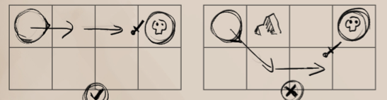

COMBAT ATTRIBUTES
While the everyday civilized creature does not have to worry about it, the realm of Avorkarth is one of danger lurking ‘round every corner. As such, adventurers, heroes, villains and creatures of all kinds must fight to simply live and reap the rewards of each further day. The combat attributes use the base ability scores to tell how efficient the creature is at these moments of conflict.
COMBAT ATTRIBUTES
WOUNDS
Wounds is the total amount of lethal damage a character can take before dying or falling unconscious. This is due to there being two different methods of wounding a character, one being lethal and the other being non-lethal. Wounds are separated into three categories : Wounds, Lesser Wounds and Minor Wounds.
Wounds : 1 to 1 ratio with the character's wound statistic. Should the character receive this many wounds, they perish.
WOUNDS
Wounds
Lesser Wounds : 5 to 1 ratio (1 wound = 5 lesser wounds). When a character takes 5 lesser wounds, they convert them into a full wound.
Minor Wounds : 10 to 1 ratio (1 lesser wound = 10 minor wounds). When a character takes 10 minor wounds, they convert them into a lesser wound.
Non-Lethal Wounds : Whenever a creature takes a wound (in any category), they also take an equivalent non-lethal wound. However, if a creature does not wish their opponent dead and simply knock them out, there are ways of dealing non-lethal damage instead.
NON-LETHAL WOUNDS
Wounds - 1
Unconsciousness : If a character receives non-lethal damage equal to their total non-lethal wounds, they fall unconscious. In such a state the character cannot move, take any actions or defend themselves.
Bleeding out : A truly dangerous state to be in, if a creature is attacked while unconscious, they gain the bleeding out state and take 1 lesser wound every round thereafter until it is healed with the heal skill or by a magical spell.
REGAINING WOUNDS
Wounds return at different rates depending on the amount of damage needing repairs.
Wounds : Wounds are not removed during a campaign, unless healed by magical or divine means.
Lesser/Minor Wounds : Minor wounds are removed at a pace of 1 per week of in-game time, with lesser wounds being removed whenever all minor wounds are removed. This next lesser wound is then converted into ten minor wounds, beginning the healing procedure again.
WOUNDED STATES (OPTIONAL)
If a creature receives a certain amount of lethal wounds, they are ever more crippled. These are known as Wounded States and carry increasing penalties.
| State | Wounds | Effect |
|---|---|---|
| Well | Full | None |
| Hurt | 3/4 | -1 Movement, Dodge and Attack |
| Wounded | 1/2 | Half Movement and Dodge, -2 Attack, -1 Might. Bleeding Out. |
| Crippled | 1/10 | 1 Movement and Dodge, halve all other combat attributes. |
INITIATIVE
Initiative determines how quickly the character reacts to combat and how swiftly they enact their actions. It is used in combat to determine who goes first, second and so on.
INITIATIVE
Instinct
SWIFTNESS
Swiftness is how many actions a creature can do within a round regardless of their Initiative, showing how quickly a creature moves in a small amount of time.
SWIFTNESS
Agility
ATTACK
The attack attribtue is used in combat to determine the effectiveness of a character's ability with weaponry, be it sword, bow, fist, claw or maw. However, the scores used for the values can be different, one being dextrous precision, the other being agile speed.
MELEE ATTACK
(Agility OR Dexterity + Instinct)/2 (rounded down)
RANGED ATTACK
(Dexterity + Instinct)/2 (rounded down) - 4
MIGHT
Any attack which hits the desired target must also bypass their natural or worn armour. Might is the value used for this and is also heavily impacted by the character's weapon.
MIGHT
Strength OR Weapon Might
COMBAT ATTRIBUTES
DODGE
Dodging is the primary method of defense, showing the character's ability to weave through combat and evade blows, arrows or directed spells.
DODGE
(Agility + Instinct)/2 (rounded down) + Armour Penalty
Directional Dodge : While in combat, the character's facing matters just as much as their placing. Almost each creature in Avorkarth has a front, flank and back. This can affect dodge rather harshly.
DIRECTIONAL DODGE
Front : Retain the full dodge amount.
Flank : Flank attacks increase the attack's rolling category by 1.
Back : Back attacks increase the attack's rolling category by 3.
PARRYING
An alternative to dodging, some heavily armoured warriors, or those with belief in their skill at arms may instead parry. The attacker's attack always hits when parrying, but never at a critical. Parrying is influenced by one's arm strength as well as one's proficiency with their current weapon. Parrying isn't a roll and is instead added on top of one's armour amount before any calculation.
Blocking : If a character has a shield, they instead block the attack, also adding the shield's block value to the parry.
PARRY
Strength/3 (rounded down) + Dexterity/4 (rounded down)
ARMOUR
Armour is the tertiary and final method of defense, from armoured plating to thick hides, it is used for any attack that isn't dodged or parried. It is used to counter the attacker's strike and to possibly negate incoming damage.
Armour Penalty : Armour within the world will protect one's skin, at the cost of hindering movement. Some armours come with an Armour Penalty, which is applied to some skills and to the character's dodge. This is covered on a per skill basis.
ARMOUR TYPES
Full Armour : Worn armour is made to defend a creature in battle from all incoming blows. Full armour bonuses apply to any attack which is made to the character, as long as they are aware that they are in combat.
Guarded Armour : Most armours and shields better protect against attacks made to the front or flank, but less so against attacks from the back. Guarded armour bonuses are only applied to frontal and flank attacks.
Natural Armour : All creatures have a skin to protect from minor injures. These are natural to the creature and as such cannot be countered by positioning unless specifically stated.
STAMINA
Stamina represents how quickly a character is exhausted in combat. When their stamina is depleted, all combat attributes are reduced by 1, with a further 1 when they reach -Stamina and then -Stamina x 2. (Normal, Tired, Fatigued and Exhausted.)
STAMINA
Constitution
RESISTANCES
Resistances offer a flat damage reduction to any damage of its type. The resistances are as follows : Physical, Acid, Poison, Necrotic, Fire, Cold, Shock, Holy, Infernal, Shadow and Spirit. Poison and Necrotic are influenced by the character's vitality.
Negative Resistances : Should a creature have a negative score in their resistances, they take reduced healing or increased damage equal to the negative of the resistance.
POISON/NECROTIC RESISTANCE
Vitality
RESOLVE
Resolve is a character's ability to remain calm and collected no matter the circumstance and is used primarily for Morale checks at the end of rounds.
RESOLVE
Will
PRESENCE
A character's presence upon the battlefield is ever important, not only to leaders who wish to bolster their allies, but also to strike fear into the enemy. The creature's presence is used as the basis for resolve rolls during combat.
Terrifying Size : A creature of Large size gains a +1 bonus to their presence, doubling per size greater than Large.
Defend the fair : Presence using Elegance only affects allies, and another ability score must be used to cause fear to enemies.
PRESENCE
Constitution OR Strength OR Charisma OR Elegance
+ 1 per 5 Wounds - 5
COMBAT
From the clash of steel upon the battlefield, to duels within a gladitorial arena, to a heroic group of warriors battling a drake upon a snowed mountain, combat within Avorkarth may happen wherever the adventurer goes. Combat is replicated in avorkarth using a turn based system and begins when the Game Master declares so, usually upon the request of a player or an ambush from deadly creatures.
INITIATING/ENACTING COMBAT
COMBAT ORDER
A. - IF AMBUSHED (If not, go to B.)
- All creatures roll 1d6 and add their initiative, with ambushed creatures taking a -10 penalty.
- Order all the initiatives in a list, from highest to lowest. If a creature's initiative is lower than the lowest ambushing creature, they do not act this round. The highest initiative goes first and players win ties.
B. - MARK INITIATIVE
- (If finishing an Ambush round) - Any ambushed creatures take off the -10 penalty to their initiative.
- All creatures roll 1d6 and add their initiative.
- Any creature whose swiftness exceeds 6 actions then gain additional turns per 6 actions, and add them to the initiative list at -5 initiative per.
- Order all the initiatives in a list, from highest to lowest.
- The highest initiative goes first. Players win ties. (Go to C.)
C. - CREATURE'S TURN
- If it is the creature's first turn in the round, they must roll their Resolve check.
- The acting creature has 6 actions (or fewer if their swiftness score is lower than 6). (See the interaction section of the rulebook for what actions are available and how much they each cost.)
- The creature may choose to stay their actions and declare to use them another time, in which case their turn ends and they may re-enact their turn before any next creature's turn.
- If all creatures have taken their turns - Go to D.
- If not, repeat C. for the next creature in the initiative list.
D. - ROUND'S END
- Enact all area, environmental and over-time effects, such as burns, bleeds or poisons. Reduce all creature's stamina by 1.
- Remove all creatures that have perished from the initiative list, and begin a new round with the updated initiative list.
- The highest initiative goes first. Players win ties. (Go to C.)
TURNS VS. ROUNDS
Many effects happen either every so many turns or every so many rounds. These are used to distinguish between different time signatures as combat occurs.
Turn : This is when a character does their actions, and is approximation of a character's ability to do anything within a short amount of time.
Round : This is only updated once every character has acted all of their turns. The round is an approximation of 6 seconds in real-time and is the most common time keeper for effects with most of them occuring at the end of every round.
COMBAT ACTIONS
COMBAT MOVEMENT
Although characters may move regularily during combat, there are a few additional rulings and movement options that are possible using the character's actions.
Charging : A creature may choose to charge a target, gaining +1 to their attack, instead of simply moving and attacking. This can onlly be done if the creature has a clear line between themselves and their target and is at least 3 tiles away.
A charge cannot change direction.
Changing Facing Direction : A character may change their facing direction by up to 1 tile degree each round whenever a foe attempts to attack them in order to properly face their opponent.

While the creature may change direction to face B, the creature attacking from C is too far to face in one action.
Prone/Standing Up : A very short action. Can be used in reaction to enemy or allied actions even if not one's turn.
LOCKING
Whenever a character is within a tile's distance, they are considered locked and in melee combat.
As such, a character can only do two actions while as such. Attack back, or retreat.
Retreating : A creature may retreat out of melee range, but may only use movement
actions for their turn.
COMBAT
DIFFICULT TERRAIN
Characters moving through difficult terrain are hindered and lose a certain amount of their movement speed and dodge.
Tame (Sand/Rocky Terrain/Undergrowth) :-2 Movement (Min. 1), -1 Dodge
Difficult Terrain (Brush, Marshlands, Ruin Rubble) : Half or -4 Movement (whichever is worse, Min 1), - 3 Dodge.
Difficult Terrain (Quicksand) : No Movement, -6 Dodge.
ATTACKING/DEFENDING
Should a character wishes to harm another for any reason, be it with sword or bow, the must declare an attack action. The rolls associated with attacking must be rolled per attack, not one roll for all attacks.
ATTACKING
HIT -> STRIKE -> DAMAGEHITTING
(ATTACK VS DODGE)To see if an attack hits one's opponent, the attacking creature must roll against their opponent's dodge unless the defender is blocking/parrying. Compare these values on the roll chart then roll to see what the outcome would be. (See Dice Rolls chart)
Critical Success : The attacker's striking value is one category higher. If the attacker's strike is also a critical, then the attacker may roll an additional hit. This can keep going until no other critical hits AND strikes are rolled.
Success : The attack hits, with no additional bonuses.
Partial Success : The opponent was able to parry the blow. The attacker's striking value is one category lower.
Fail : The opponent dodges the attack. The attack doesn't hit and can't be rolled for Striking.
Critical Fail : MELEE : The opponent outmaneuvers the attacker and may use an immediate action to make an attack of opportunity. (See further) RANGED : Fumble and drop your weapon.

Bonus Text!
COMBAT
STRIKING
(MIGHT VS ARMOUR)
Each attack that hits an opponent doesn't automatically deal damage. They must rolled a second time to see if said attack goes through the opponent's armour. Compare each attack's might and the opponent's armour on the dice rolling chart, then roll the strikes. If it goes through, the weapon's damage is applied to the opponent's wounds.
Critical Success : The defender takes a Wound. If the attack was a critical hit AND a critical strike, roll another attack. This keeps going until either the attack or strike rolled are not criticals.
Success : The weapon's Lesser Wound damage is applied.
Partial Success : The weapon's Minor Wound damage is applied.
Fail : The damage is negated.
Critical Fail : The damage is negated and the weapon takes a durability damage point. If unarmed, the attacker instead takes 1 minor wound.
ADDITIONAL STRIKING DAMAGE
The amount of damage dealt is directly indicated by the weapon used. However, the difference in strength between the users also changes the damage dealt, with the advantage to the creature with a greater strength score. (It follows the dice rolling table)
| STRENGTH DIFFERENCE | Effect |
|---|---|
| +/- 0 | No Effect |
| +/- 1 | Add/Remove 5 minor wounds to the damage. (To a minimum of 1 minor wound). |
| +/- 2 | Add/Remove 1 lesser wound to the damage. (To a minimum of 1 minor wound). |
| +/- 3 | Add/Remove 1 wound to the damage. (To a minimum of 1 minor wound). |
| +/- 5 | Add/Remove 3 wounds to the damage. (To a minimum of 1 minor wound). |
| +/- 7 | Add/Remove 6 wound to the damage. (To a minimum of 1 minor wound). |
| +/- 10 | Add/Remove 10 wounds to the damage. (Certain creatures cannot hurt others...) |
ATTACK/STRIKING ADDITIONAL RULES
Whenever a character attacks or is attacked, there are a few minor additional rules that come into play and may be used to their advantage.
Attacks of Opportuinty : Whenever an attack of opportunity is given, the creature may use an immediate action to do a single primary attack.
Alternate Attacks : Some creatures may have alternate primary attacks. Which attack is used must be chosen before rolling to hit.
Secondary Attacks : Some creatures may have additional secondary attacks, such as a bite, tail or claws. These can be added to the primary attacks by using a swift action.
Dual Wielding : For each additional weapon held by a creature, add another primary attack but reduce all hitting values by 1.
Lesser Attack :A creature may use it's given move action to instead do a lesser attack. It acts as a primary attack with -1 to it's hitting values.
Flanking : For each additional ally within melee range of a creature, reduce its dodge by 1. Positioning does not matter for flanking.
Attack Positioning : Positioning does matter for attacking however. See Dodge. (Combat Attributes)
NON-LETHAL DAMAGE
Sometimes a creature may wish to simply knock out an opponent instead of killing them. If this is the case, the attacker counts all their roll values with lethal weaponry as one category lower on the dice roll chart. Non-lethal weaponry ignores this rule and rolls normally.
COMBAT MANEUVERS
Combat maneuvers are attack actions that don't deal damage, instead attempting to displace or control the target. Combat maneuvers only need to roll the Hitting part of the attack actions and automatically pass Striking for their effects.
Size : Combat maneuvers are much harder to succefully do against any size larger than oneself. For every size larger, the opponent gains a +4 bonus to their dodge value, and it is impossible to do any combat maneuvers against targets 3 sizes larger.
Critical Fail : MELEE : The weapon bounces off. Drop your weapon. RANGED : The projectile breaks upon impact.
Attack Penalties : Combat maneuvers usually require slightly more skill than simply attacking the target with a club. This is per maneuver.
COMBAT
COMBAT MANEUVERS
Maneuver PenaltyShove/Drag -1 per tile Attempt to push/drag a target for a distance up to one's total movement. Must be in melee range and remain in melee range if dragging.
Cripple -1-X Attempt to cripple a target within attacking range, reducing movement by half for 1+X rounds.
Trip -2 Attempt to make a target within melee range fall down and gain the prone condition.
Disarm -3. Attempt to make a target within attacking range drop their wielded weapon.
Grapple -3 Attempt to partially grapple a target. (See Grappling)
Tackle +3 Attempt to fully grapple a target. (See Grappling) The target may use an immediate action to get a free Striking roll with their primary attack.
GRAPPLING
Grappling can be initiated by two of the combat maneuvers, and unlike any other combat maneuver results in a permanent state.
While grappled, the initiating creature and its opponent both lose partial to full movement and lose bonuses to their Dodge. How much is depending on the state of the grapple.
Partial Grapple : If a grapple check is successful, the target is grabbed by the arm or leg. Both the grappler and target lose half their dodge. The grappled target lowers their movement by half before any other movement calculations. The two creatures drag each other whenever moving. If another grapple is successful, the partial grapple becomes a full grapple.
Full Grapple : If a grapple check is applied twice in a row or the target was tackled, the grappled target may no longer move or use any limbs. The grappler gains +5 to the Escaping Grapples check every round. If the grapple is succesful once again, the grappler may choose to either pin or choke/constrict their target.
Choke/Constrict : The grappler deals i lethal damage every round, ignoring all guarded armour bonuses.
Pin : Pinning the target ends the grapple action and allows the grappler to use rope or bindings to tie up the target. The target must now use their escape artist checks against the bindings instead of strength checks against the grappler.
Escaping Grapples : Each round, the target and grappler must roll and add their strength. If the target's total is greater than the grappler's, they escape.
MORALE CHECK
Morale checks are a roll required by all characters at the start of the first turn within a round. It uses the creature's Resolve as its basis and is the representation of the flight or fight response throughout a battle.
MORALE CHECK
3 + Highest enemy Presence - Highest allied Presence
Critical Succes : Lose 1 Fear point.
Success : Nothing happens.
Partial Success : Lower Resolve by 1 for the next Morale check.
Failure : Gain 1 Fear point per difference between your Will score and the Resolve.
Critical Failure : Gain 2 Fear points per difference between your Will score and the Resolve.
CRITICAL WOUNDS (OPTIONAL)
If a Game Master is feeling kind, they may instead inflict critical wounds whenever a player dies, instead leaving them with 1 lethal wound and unconscious for the remainder of the current combat. Whenever this occurs, roll a die.
1 - Eyes : Blinded on one side. That side is now considered a creature's “back” when attacked. -3 to all sight based skill checks. If it happens again, all sides are considered the “back” and can no longer use sight.
1 - Arms : Limb is cut off. Halve all strength skill and grapple checks. If no limbs remain, can no longer use strength skill checks.
3 - Hips : Hips and lower limbs are crippled. 1 tile movement. Can't use move based skills and actions
4 - Hands : Limb is cut off. Halve all dexterity based skill checks. Can no longer use two-handed weapons. If no limbs remain, can't use dexterity skills at all.
5 - Torso :-1 to all ability scores and remove utility from any additional piece if available. (Wings, tails, spines... etc.). This critical wound can stack.
6 - Head : Reduce all rolls results by 1. This critical wound can stack.
Multi/Single Limbs: If a creature has more than 2 appendages, the GM may choose how to apply the negatives at a reduced rate. If they have only a single limb (like a tail for legs), automatically apply the full penalty.